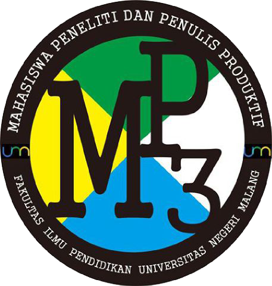

Mahasiswa Peneliti dan Penulis Produktif atau disingkat MP3 merupakan salah satu Unit Aktivitas Fakultas Ilmu Pendidikan dalam bidang kepenulisan. MP3 memiliki lima divisi antara lain ; Divisi Sastra, Divisi Penerbitan, Divisi Karya Ilmiah, Divisi Jurnalistik, dan Divisi PP3.
MP3 bertujuan untuk menumbuh kembangan jiwa kepenulisan masyarakat khususnya mahasiswa FIP Universitas Negeri Malang sesuai dengan bakat dan minatnya masing-masing. Hal ini dapat kita ketahui dengan adanya kajian tentang kepenulisan setiap minggunya. Selain itu berbagai kegiatan lomba kepenulisan, seminar kepenulisan maupun pelatihan desain juga telah dilaksanakan
Menjadikan UA MP3 sebagai wadah organisasi kepenulisan yang kreatif, inovatif, imajinasi, berprestasi serta menjadi jembatan penghubung antara sesama anggota MP3 dan organisasi yang lain baik internal ataupun eksternal